Publications
collaborators that used our platform-
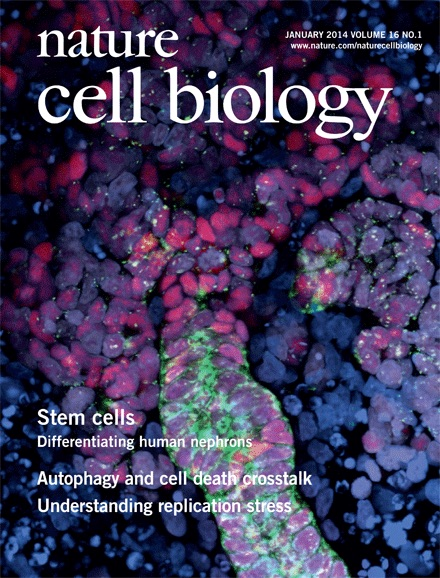
Directing Human Embryonic Stem cell Differentiation Towards a Renal Lineage Generates a Self-organizing Kidney
Takasato M., et. al.
Nature Cell Biology 16, 118-126, (2014)
-
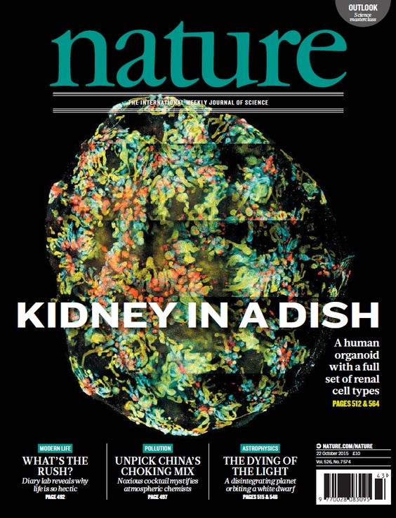
Kidney Organoids From Human iPS Cells Contain Multiple Lineages and Model Human Nephrogenesis
Takasato M., et. al.
Nature 526, 564–568 (2015)
-
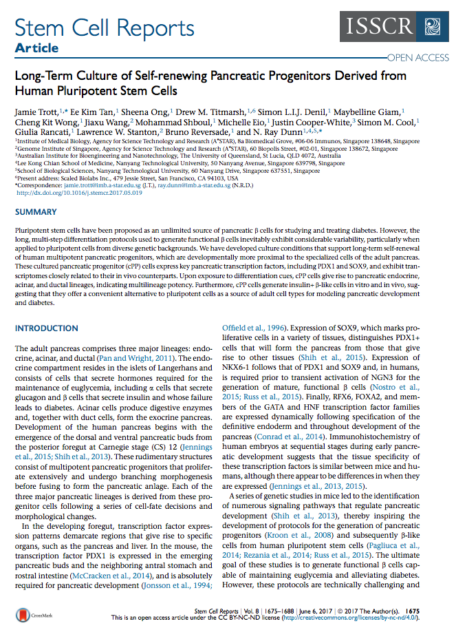
Long-Term Culture of Self-renewing Pancreatic Progenitors Derived from Human Pluripotent Stem Cells
Trott J., et. al.
Stem Cell Reports, Volume 8, Issue 6 (2017)
Publications
published by our core team-
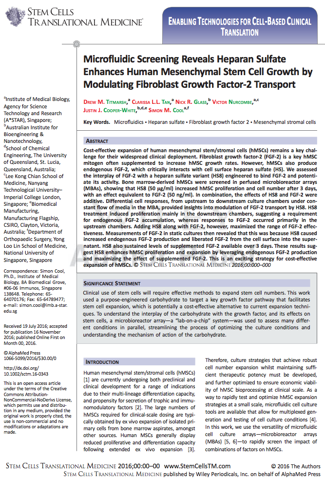
10. Microfluidic Screening Reveals Heparan Sulfate Enhances Human Mesenchymal Stem Cell Growth by Modulating Fibroblast Growth Factor-2 Transport
Titmarsh D. M., et. al.
Stem Cells Translational Medicine, (In Press, 2017)
-
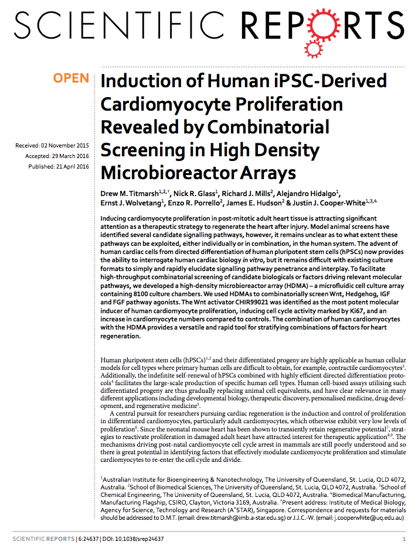
9. Induction of Human iPSC-Derived Cardiomyocyte Proliferation Revealed by Combinatorial Screening in High Density Microbioreactor Arrays.
Titmarsh, D. M. et al.
Scientific Reports 6, (2016).
-
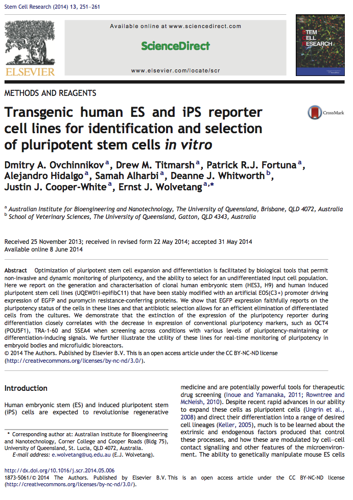
8. Transgenic human ES and iPS reporter cell lines for identification and selection of pluripotent stem cells in vitro.
Titmarsh, D. M. et al.
Stem cell research 13, 251–261 (2014).
-
 7. Full factorial screening of human embryonic stem cell maintenance with multiplexed microbioreactor arrays.
7. Full factorial screening of human embryonic stem cell maintenance with multiplexed microbioreactor arrays.
Titmarsh, D. M., Ovchinnikov, D. A., Wolvetang, E. J. & Cooper‐White, J. J.
Biotechnology Journal 8, 822–834 (2013).
-
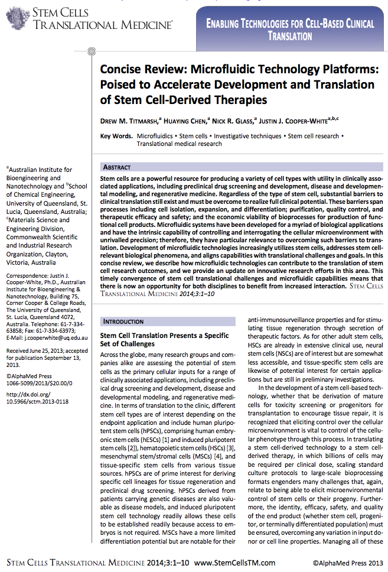
6. Review: Microfluidic Technology Platforms: Poised to Accelerate Development and Translation of Stem Cell-Derived Therapies
Titmarsh, D. M., Chen, H., Glass, N. R. & Cooper-White, J. J.
Stem Cells Translational Medicine 3, 81–90 (2013).
-
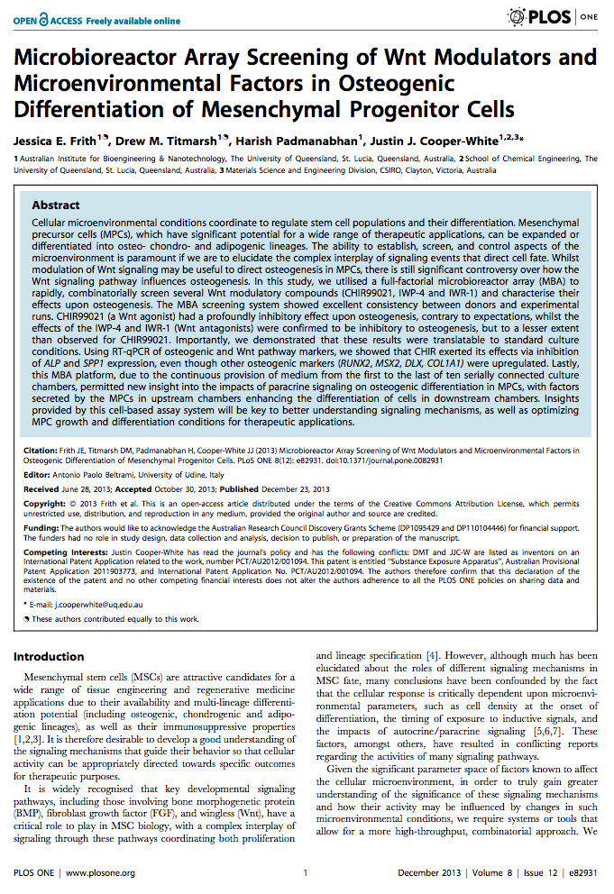
5. Microbioreactor Array Screening of Wnt Modulators and Microenvironmental Factors in Osteogenic Differentiation of Mesenchymal Progenitor Cells
Frith, J. E., Titmarsh, D. M., Padmanabhan, H. & Cooper-White, J. J.
PLOS ONE 8, e82931 (2013).
-
4. Microbioreactor Arrays for Full Factorial Screening of Exogenous and Paracrine Factors in Human Embryonic Stem Cell Differentiation
Titmarsh, D. M. et al.
PloS One 7, e52405 (2012).
-
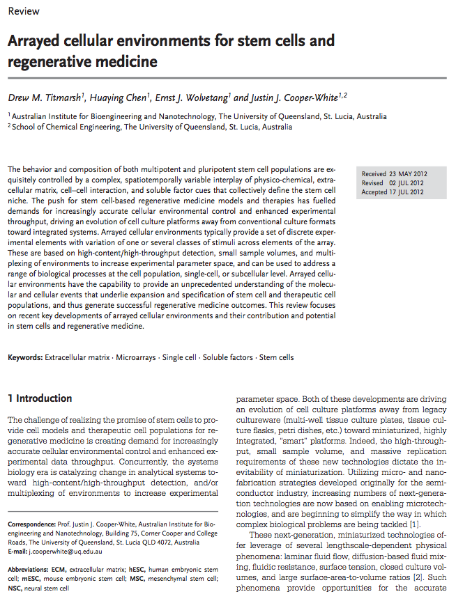
3. Review: Arrayed Cellular Environments for Stem Cells and Regenerative Medicine
Titmarsh, D. M., Chen, H., Wolvetang, E. J. & Cooper‐White, J. J.
Biotechnology Journal 8, 167–179 (2012).
-
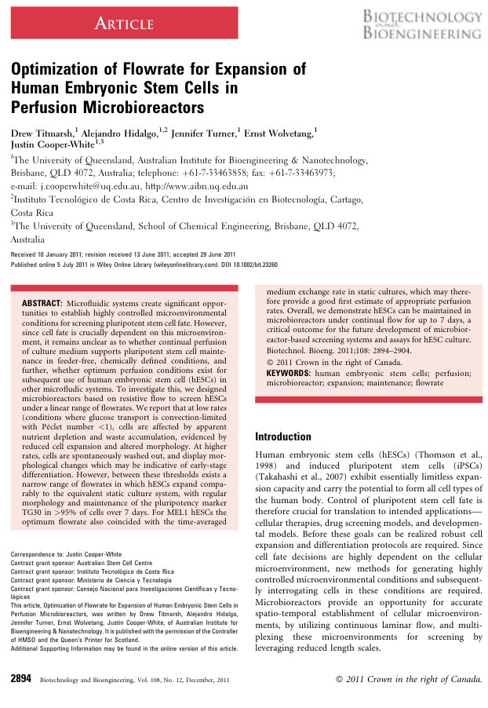
2. Optimization of Flowrate for Expansion of Human Embryonic Stem Cells in Perfusion Microbioreactors
Titmarsh, D., Hidalgo, A., Turner, J., Wolvetang, E. & Cooper‐White, J.
Biotechnology and Bioengineering 108, 2894–2904 (2011).
-
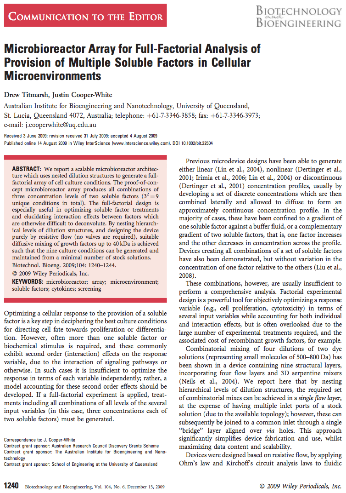
1. Microbioreactor Array for Full‐Factorial Analysis of Provision of Multiple Soluble Factors in Cellular Microenvironments
Titmarsh, D. & Cooper‐White, J.
Biotechnology and Bioengineering 104, 1240–1244 (2009).